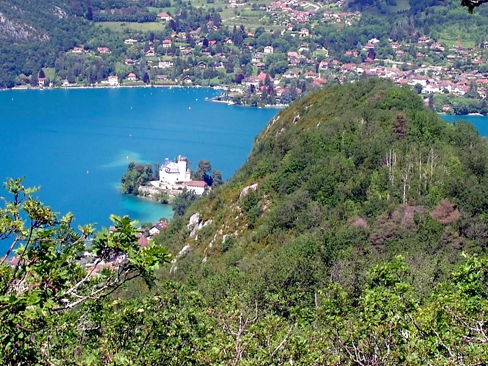

Photo: Lac Annecy Tourisme fiche (Apidae), edited
The rocky spine that juts into Lake Annecy, walked as a loop from Duingt's old village on the quiet west shore. A lane past the Chemin de la Grotte leads to a first viewpoint within ten minutes, then dirt paths climb to the plateau and along the crest of the Taillefer, with the lake on both sides and the Bauges and Tournette all around, before dropping to the hamlet of Les Maisons and returning below the ridge. An FFRandonnee circuit from the official Haute-Savoie trail register; the tourist office ranks it among the area's most beautiful easy-reach hikes, and dogs are welcome.
Start here: parking de l'église, Duingt (overflow parking on route des Prés Bernard)
Keep the leash on, that's the official condition for dogs here. The loop is friendly in stages: the first stretch is tarmac with benches, the plateau suits children, and only the crest and return ask for surer feet, so turn back at the plateau junction with a tired dog. Skip it entirely after heavy rain and wear proper shoes. The two village fountains at the start and one at km 2.4 are the only water, and the crest is sunny, so fill up. Open all year outside snowy spells.
The trail rating above describes the mountain, and it's the same for every dog. What it can't tell you is how this route pairs with your dog's build, age, and health. Create your dog's free profile and DoloPaws scores every trail against your dog on six real safety factors: terrain, shade, water access, distance, exposure, and heat risk.
Before you go: the dog safety guide · water for dogs on trail · dogs on cable cars · meeting a guardian dog
Manually curated by DoloPaws. A dated source record is not yet available; confirm current conditions locally.